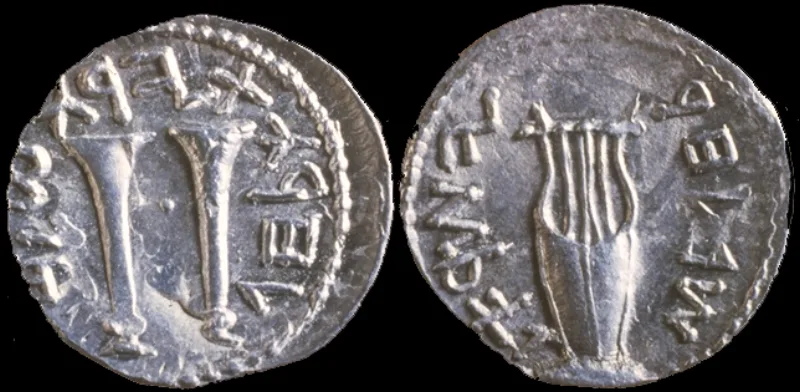
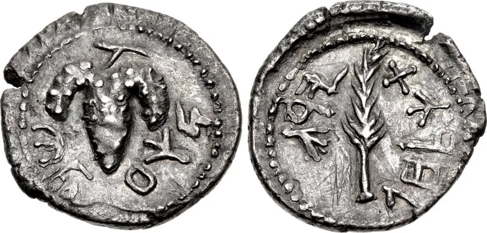
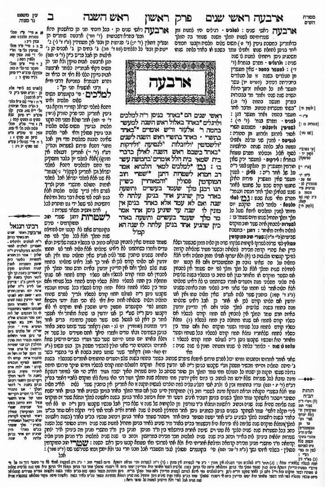

Jewish sources grant this themselves. You can make the point from their own books.
The Old Testament seems to describe the coming one twice, in two ways that do not fit together. One is a king from David's family who wins and rules in peace.
The other is a servant who is hated, pierced and killed. Both pictures are there.
This is not something Christians spotted. The Talmud — the huge Jewish collection of rabbinic teaching, finished around 500 AD — hits the same problem.
Its answer, in a passage called Sukkah 52a, is two Messiahs. Messiah son of Joseph suffers and is killed.
Messiah son of David reigns.
Less than it sounds. Not two people, but one person, twice.
He came first as the servant. He returns as the king.
Every piece of the rabbis' own solution is kept. Only the counting changes.
Very strong. The two-picture problem is admitted inside Judaism, in one of its own central books.
You are not inventing the difficulty.
It stops the conversation being "my book versus your book." You are both looking at the same puzzle in the same text. You just solve it differently.
"Why is one person coming twice harder to believe than two different Messiahs?"



That warrior Messiah saves no one, and Maimonides rules out a Messiah who dies.
The rabbinic answer is that Messiah son of Joseph is a warrior. He dies in the last battle against Gog. His death is not a sacrifice and it saves nobody. He also dies at the end of history, not centuries before the redemption.
They add that the idea is post-biblical and marginal. It may even be a response to Bar Kokhba's death in 135 AD, rather than old teaching.
Above all, Maimonides' test stands. In the Mishneh Torah he says the Messiah is known by what he achieves: a rebuilt Temple, the exiles brought home, world peace, and everyone knowing God. Anyone who dies without doing those things is ruled out. Adding a second coming, they argue, is a patch that can never be tested. At least the rabbis' two Messiahs both act inside one redemption.
Conceded: Judaism's own books already hold a Messiah who is killed.
Here is what is conceded. The tradition itself found a Messiah who is killed, in its own texts. Sukkah 52a hangs his death on Zechariah 12:10 — the same verse John 19:37 quotes. Daniel Boyarin, a professor of Talmud and not a Christian, argues that a suffering Messiah is a thoroughly Jewish idea.
Use this to change what the conversation is about. The question was never whether Judaism could imagine a Messiah who dies. It plainly could, and did. The question is whether the one who died is the one who returns. That is a much smaller gap than either side usually assumes.